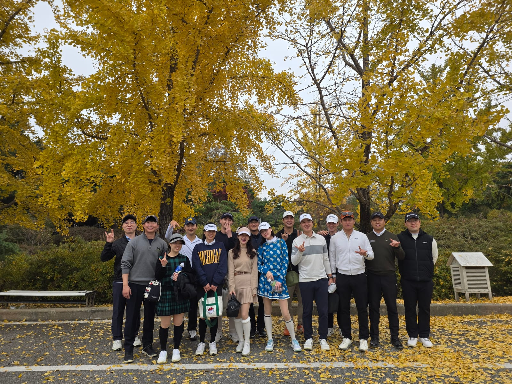
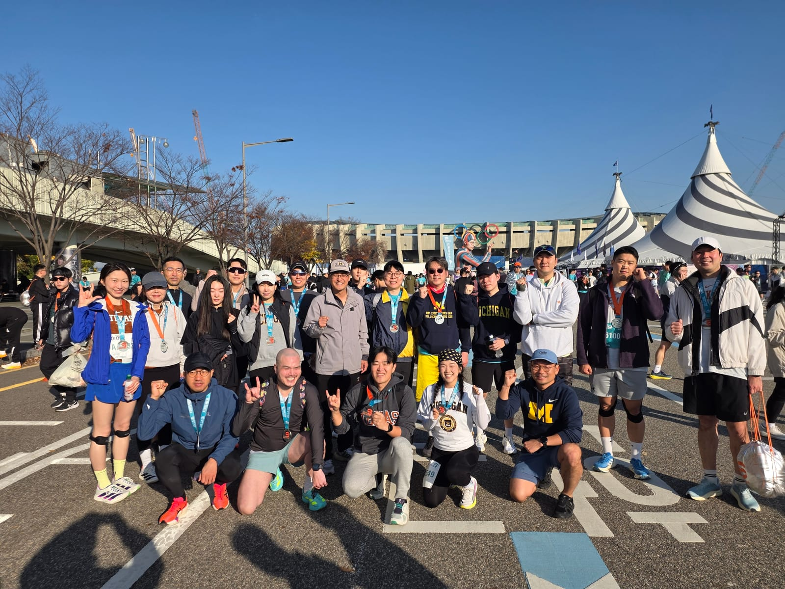
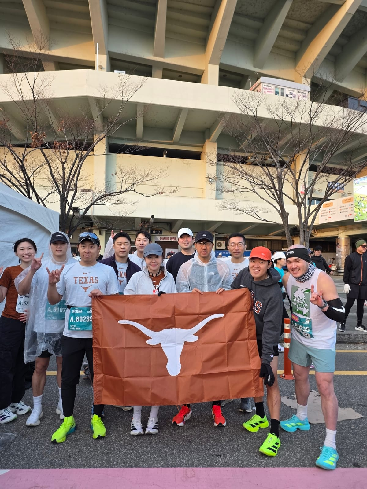
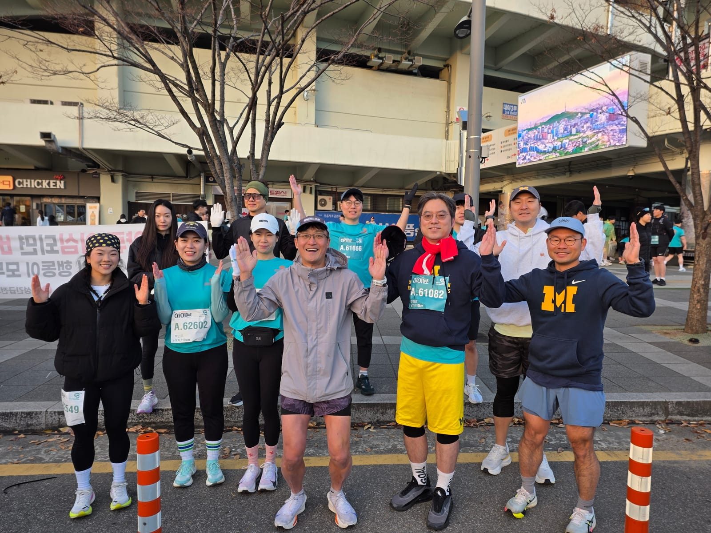
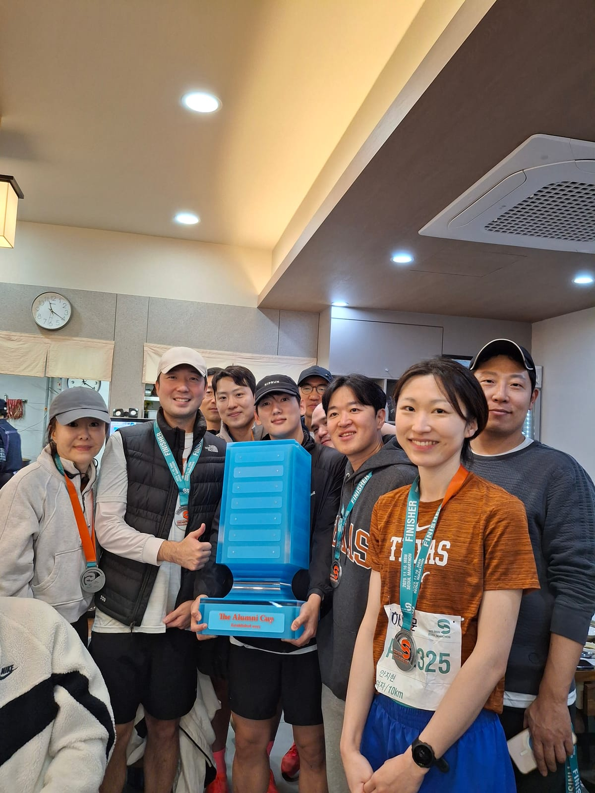
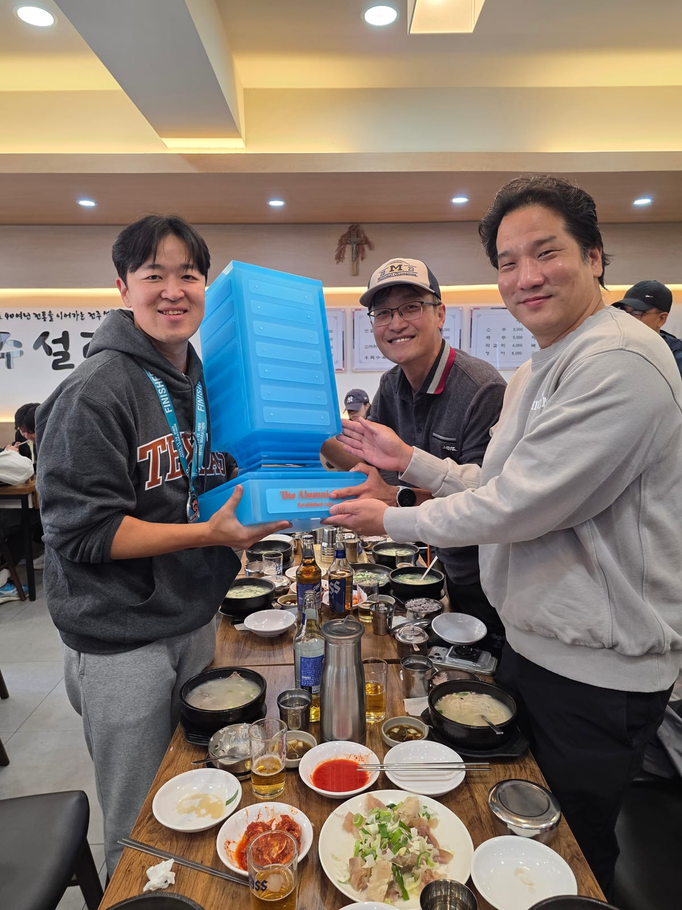

Overall standings종합 순위
| # | School학교 | Golf골프 | 10K10K | Total합계 |
|---|---|---|---|---|
| 1 | 🤘 Texas🤘 텍사스 | 5.857 | 5.728 | 11.585 |
| 2 | 〽️ Michigan〽️ 미시간 | 4.143 | 4.272 | 8.415 |
⛳ Golf Championship⛳ 골프 챔피언십
🏆 University of Texas🏆 텍사스 대학교
5.857 pts5.857 점
University of Michigan미시간 대학교
4.143 pts4.143 점
Individual (competitive)선수부 (개인전)
| # | Name이름 | School학교 | Score타수 | Pts점수 |
|---|---|---|---|---|
| 1 | 🏆 김희원 | Texas텍사스 | 80 | 1.5 |
| 2 | 김건희 | Texas텍사스 | 81 | 1.357 |
| 3 | 김수환 | Michigan미시간 | 82 | 1.214 |
| 4 | 김희준 | Texas텍사스 | 83 | 1.071 |
| 5 | 김현수 | Texas텍사스 | 85 | 0.929 |
| 6 | 조아인 | Michigan미시간 | 100 | 0.786 |
| 7 | 제니 | Michigan미시간 | 101 | 0.643 |
| 8 | 신유진 | Michigan미시간 | 102 | 0.5 |
Team matches (recreational)일반부 팀 매치
Match 11경기
🏆 〽️ Michigan🏆 〽️ 미시간0.6
- 안성진90
- 길정현90
🤘 Texas🤘 텍사스0.4
- 김요한87
- 정해성101
Match 22경기
🏆 🤘 Texas🏆 🤘 텍사스0.6
- 이민지102
- 한성연109
〽️ Michigan〽️ 미시간0.4
- 고연경111
- 장영태131
📋 How 2025 Golf was scored📋 2025 골프 채점 방식
- 4 vs. 4 individual matches(competitive) + 2 teams matches(recreational).
- 1~8 ranking gets designated points (1.5, 1.357, 1.214, 1.071, 0.929, 0.786, 0.643, 0.5) total 8 points
- For two team matches winning team takes 0.6 points while the losing team takes 0.4 total 2 points.
- 2 mulligans, one each front and back.
- Putter length concede.
- 선수부 4 vs. 4는 개인전으로 일반부 4 vs. 4는 팀전으로 치뤄집니다.
- 선수부의 1~8등 까지는 총 8점내 다음 같은 차등 포인트를 획득힙니다. (1.5, 1.357, 1.214, 1.071, 0.929, 0.786, 0.643, 0.5)
- 일반부 2팀은 이긴팀은 0.6점 진 팀은 0.4점을 획득합니다.
- 멀리건은 전후반 한개씩 사용가능합니다.
- 퍼터 거리 오케이.
- 맥스 트리플까지 카운트합니다.
🏃 10K Run Championship🏃 10K 마라톤 챔피언십
🏆 University of Texas🏆 텍사스 대학교
5.728 pts5.728 점
University of Michigan미시간 대학교
4.272 pts4.272 점
Individual times개인 기록
| # | Name이름 | School학교 | Time기록 |
|---|---|---|---|
| 1 | 🏆 정상민 | Texas텍사스 | 0:38:37 |
| 2 | 안성진 | Michigan미시간 | 0:39:04 |
| 3 | 김준성 | Michigan미시간 | 0:40:54 |
| 4 | 김요한 | Texas텍사스 | 0:43:19 |
| 5 | 조용훈 | Texas텍사스 | 0:43:25 |
| 6 | 민병준 | Texas텍사스 | 0:43:48 |
| 7 | 김기섭 | Texas텍사스 | 0:43:53 |
| 8 | 박종현 | Texas텍사스 | 0:44:00 |
| 9 | 최보람 Fastest woman여자 1위 | Michigan미시간 | 0:45:25 |
| 10 | 신유진 | Michigan미시간 | 0:47:54 |
| 11 | 김범식 | Michigan미시간 | 0:50:24 |
| 12 | 김용현 | Michigan미시간 | 0:52:48 |
| 13 | 장우진 | Texas텍사스 | 0:53:35 |
| 14 | 안지현 | Texas텍사스 | 0:54:12 |
| 15 | 이태훈 | Michigan미시간 | 0:57:22 |
| 16 | 강정호 | Michigan미시간 | 0:57:45 |
| 17 | 조성민 | Michigan미시간 | 0:57:47 |
| 18 | 김주해 | Texas텍사스 | 1:00:02 |
| 19 | 이신영 | Michigan미시간 | 1:06:29 |
📋 How 2025 10K was scored📋 2025 10K 채점 방식
- 10 vs. 10 on 10k race. (At least 2 female participants)
- Total 8 points divided into ranks. (0.64, 0.615, 0.589, 0.564, 0.539, 0.514, 0.488, 0.463, 0.438, 0.413, 0.387, 0.362, 0.337, 0.312, 0.286, 0.261, 0.236, 0.211, 0.185, 0.16)
- The total average winning team gets 1 point
- The team with the fastest female runner gets 0.6 points.
- 10 대 10 10k 대결 (여자 참가자 최소 2명 참석)
- 총 8점이 1~20등까지 차등 분배 (0.64, 0.615, 0.589, 0.564, 0.539, 0.514, 0.488, 0.463, 0.438, 0.413, 0.387, 0.362, 0.337, 0.312, 0.286, 0.261, 0.236, 0.211, 0.185, 0.16)
- 전체 평균 우승학교 1점 획득
- 여자 우승 학교 0.6점 획득
📸 2025 Photos📸 2025 대회 사진
⛳ Golf Competition⛳ 골프 대회

🏃 10K Run🏃 10K 마라톤



🏆 Award Ceremony🏆 시상식


Over 36 alumni participated.
36명 이상의 동문이 참가했습니다.